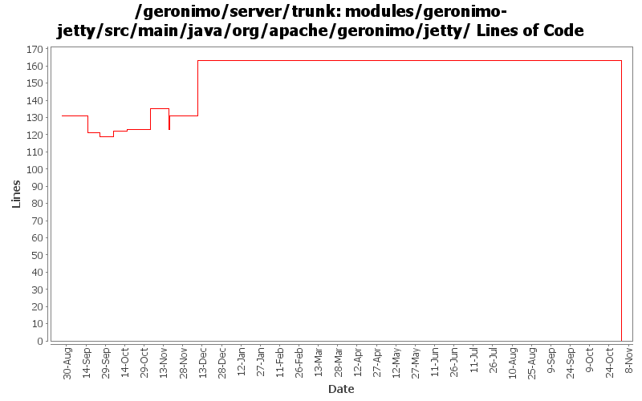

[root]/modules/geronimo-jetty/src/main/java/org/apache/geronimo/jetty
 cluster
(0 files, 0 lines)
cluster
(0 files, 0 lines)
 connector
(0 files, 0 lines)
connector
(0 files, 0 lines)
 interceptor
(0 files, 0 lines)
interceptor
(0 files, 0 lines)
 requestlog
(0 files, 0 lines)
requestlog
(0 files, 0 lines)

| Author | Changes | Lines of Code | Lines per Change |
|---|---|---|---|
| Totals | 113 (100.0%) | 213 (100.0%) | 1.8 |
| gdamour | 6 (5.3%) | 80 (37.6%) | 13.3 |
| jlaskowski | 12 (10.6%) | 72 (33.8%) | 6.0 |
| kevan | 36 (31.9%) | 44 (20.7%) | 1.2 |
| djencks | 25 (22.1%) | 9 (4.2%) | 0.3 |
| vamsic007 | 6 (5.3%) | 8 (3.8%) | 1.3 |
| prasad | 26 (23.0%) | 0 (0.0%) | 0.0 |
| jdillon | 2 (1.8%) | 0 (0.0%) | 0.0 |
GERONIMO-3565. Modules distributed amongst framework/modules and plugins
0 lines of code changed in 26 files:
GERONIMO-2641 Add license headers to files. Thanks Jarek!
32 lines of code changed in 4 files:
modified svn properties
8 lines of code changed in 4 files:
GERONIMO-2537 Update the src headers in server/trunk/modules to be compliant with the new ASF src header and copyright policy (http://www.apache.org/legal/src-headers.html). I also did some cleanup of the src headers and tried to make them all a consistent format
12 lines of code changed in 32 files:
GERONIMO-2491 Possible solution for Hibernate problem. Use the same context for connection tracking for all includes/dispatches in a servlet request.
1 lines of code changed in 1 file:
GERONIMO-2278 Problems in editing Jetty SSL Connector and the edit page in Geronimo Console
0 lines of code changed in 2 files:
Partial fix for GERONIMO-2537 All Geronimo source files must be brought in line with the new ASF source header and copyright notice policy
The modules directory is supposed to be migrated. There're some issues with some files, but they'll be handled manually
72 lines of code changed in 12 files:
GERONIMO-2492 first steps, make the WebServiceBuilder a little more flexible
5 lines of code changed in 1 file:
GERONIMO-2469 - Allow sharing of a single WADI group communication instance between multiple Web-app
Enable WADI ServiceSpace. Also, session timeout is also cascaded to WADISessionManager.
5 lines of code changed in 1 file:
optimize imports.... I did this accidentally but am shocked at how badly organized the imports are
1 lines of code changed in 19 files:
GERONIMO-2422 likely fix for losing session id
2 lines of code changed in 2 files:
GERONIMO-2163 - WADI Integration for Jetty
75 lines of code changed in 5 files:
GERONIMO-2383 Refactor naming builder to a set of registered builders
0 lines of code changed in 2 files:
Apply standard properties
0 lines of code changed in 2 files: